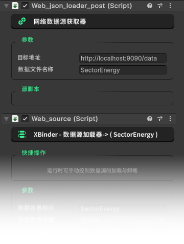
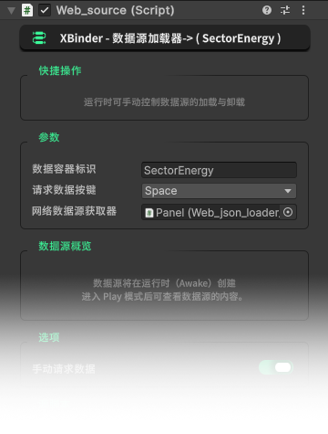
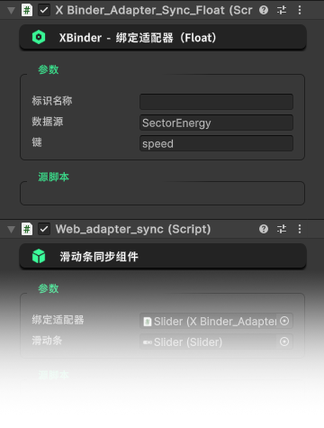
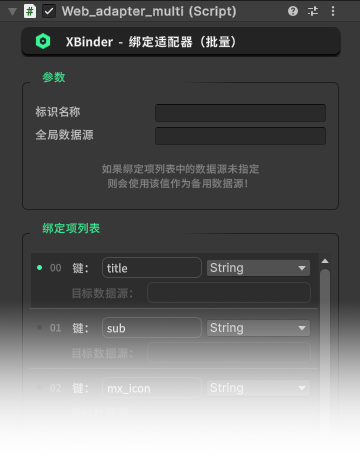

全局总线 · 按名取数
静态 XBinder_Bus 登记所有容器，脚本里只写裸名字，xbinder_ 前缀由内部补齐。
数据绑定最常见的麻烦不在写，而在维护：字段引用散落、刷新时机各写各的、数据源重建后 UI 空一片。
每一层只做一件事：拿数据、存数据、投递数据、显示数据。换任何一层，其它层不用动。
数据自上而下流一次，UI 改动只需走 push() 反向提交，回环由内部闸门拦住。
热路径无反射、无 LINQ、无装箱；运行时部分不引用 UnityEditor，可直接进构建。
静态 XBinder_Bus 登记所有容器，脚本里只写裸名字，xbinder_ 前缀由内部补齐。
Float、Int、Bool、String、Color、Vector2/3/4、Quaternion、Rect、RectOffset、Object，同名不同型互不干扰。
写入相同值直接返回，不产生任何回调；float 带 0.0001 容差，其余按精确相等判断。
只读 Base<T>、双向 Sync<T>（_syncing 闸门防回环）、多路批量 Multi。
数据源重建、Domain Reload 后自动重绑并立刻回显当前值，断线与重连都有事件出口可接 UI 提示。
绑定总线查看器、Json 转 C# 实体生成器、Inspector 快捷操作与多选批量编辑，随包提供。
数据源、适配器都配有定制面板：加载 / 卸载、手动请求、绑定项列表，全部可视化配置。




写数据源 → 挂适配器 → 接控件。已有的 UI 结构不用改，缺的只是中间这一层。
using SevenStrikeModules.XBinder;
using UnityEngine;
public class player_source : XBinder_Source
{
public override void Awake()
{
// 运行时登记为 xbinder_player
identifier = "player";
base.Awake();
}
public override void request()
{
// 换成读取 Json / HTTP 返回
bind("");
}
public override void bind(string json = "")
{
category.set_string("name", "Engine-A");
category.set_float("speed", 3200f);
category.set_color("tint", new Color(0.23f, 1f, 0.61f));
}
}using SevenStrikeModules.XBinder;
using UnityEngine;
using UnityEngine.UI;
public class speed_slider : MonoBehaviour
{
public XBinder_Adapter_Sync_Float adapter;
public Slider slider;
private void OnEnable()
{
// 数据 → UI
adapter.act_on_value_changed += on_data_changed;
// UI → 数据
slider.onValueChanged.AddListener(on_slider_changed);
}
private void on_data_changed(float value)
=> slider.SetValueWithoutNotify(value);
private void on_slider_changed(float value)
=> adapter.push(value);
}using SevenStrikeModules.XBinder;
using UnityEngine;
using UnityEngine.UI;
public class name_text : XBinder_Adapter_Base<string>
{
public Text label;
protected override void subscribe()
=> category.subscribe_string(target_key, on_value_changed);
protected override void unsubscribe()
=> category.unsubscribe_string(target_key, on_value_changed);
public override string get_value() => category.get_string(target_key);
protected override void on_value_changed(string value)
=> label.text = value;
}XBinder 的所有编辑器面板由 XGUI 绘制；两者同属 SevenStrike 的 Unity 工具链。
17 种主题色、5 种容器填充、20 余种配置控件，43 种缓动曲线与 120+ 内置图标。XBinder 的 Inspector 外观全部来自它。
github.com/SevenStrike/XGUILocal：本地 Json 数据源 + 滑块双向控风扇转速。Web：Node.js + Express + MySQL 服务端，GET / POST 加载器 + 双向回写。
github.com/SevenStrike/XBinder仓库里带完整示例与说明文档，欢迎提 Issue，也欢迎 Star。